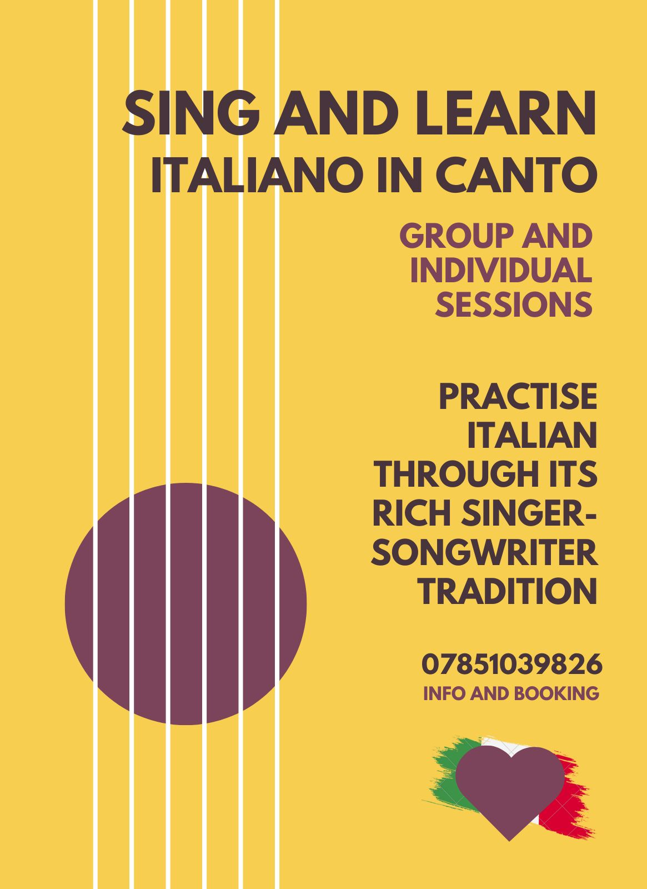

Learning Italian just got a lot easier!
Fancy learning Italian in a fun way? Italiano In Canto is an opportunity to improve Italian
using the power of music. Embark on a journey into the rich tradition of Italian singer-songwriter music and learn
and remeber useful sets of words and sentences.
Songs are memorable- they are designed to be remembered over a long time, and
the tell us stories about the places and event that populate the imagery of Italian
speakers worldwide.
We find that learning Italian through singing helps language
learners associate expressions with emotions and their context, which we find a
natural and fun way to learn a language.
Our sessions do not require either
singing or prior Italian language skills, and is not intended to improve your
singing (or ours), but just to play with Italian alongside fellow language learners xx
Call Vanni for bookings and availability :)
Follow us on Intagram for news
Like our Facebook Page and invite friends!
View our Catalog of events on WhatsApp